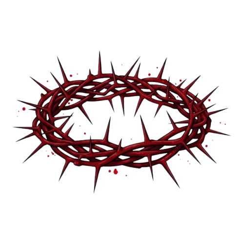
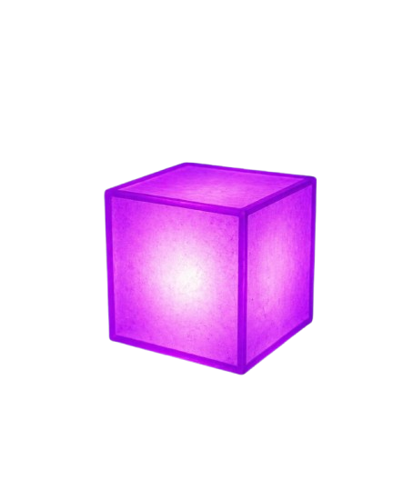
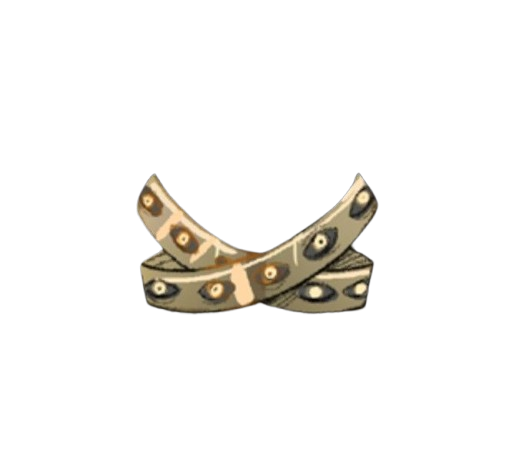
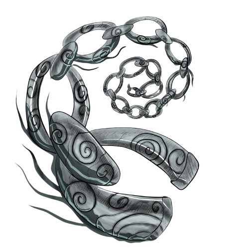

RELÍQUIAS
Reliquias carregadas...
Reliquias carregadas...
Objetos anômalos catalogados.
Arquivo restrito — monitoramento de artefatos.

Tipo: Relíquia de Sangue
Local: Santa Rovina
Portador: Carole Suzuki
Observações:
Artefato ativo. Alto nível de corrupção registrado.
A portadora demonstra sinais avançados de simbiose.

Local: Não identificado
Portador: Desconhecido
Observações:
Nenhum rastro recente. Possível ocultação ativa.

Local: Tenebris
Portador: Desconhecido
Capacidade:
Restaurar aquilo que foi perdido — uma única vez.

Local: Não identificado
Observações:
Silêncio absoluto nos registros — considerado anômalo.
Possibilidades levantadas:
Selamento fora do plano físico
Inatividade total
Influência ativa sem manifestação detectável
Fragmento isolado (mesma caligrafia dos tomos):
Das quatro relíquias, apenas uma possui confirmação direta de atividade.
Os demais registros permanecem fora de alcance… ou compreensão.
A tradução dos tomos antigos continua em andamento.
O processo tem se mostrado lento, inconsistente e mentalmente desgastante para os envolvidos.
Alguns tradutores relatam lapsos de memória, sonhos recorrentes e a sensação de já terem lido trechos que ainda não foram decifrados.
A autoria dos fragmentos mais recentes é altamente controversa.
Indícios sugerem que o autor possuía acesso direto à entidade central dos eventos — possivelmente alguém próximo o suficiente para testemunhar… e temer.
Trechos tradicionais:
Os fragmentos não oferecem respostas diretas.
Ainda assim, grande parte permanece ilegível.